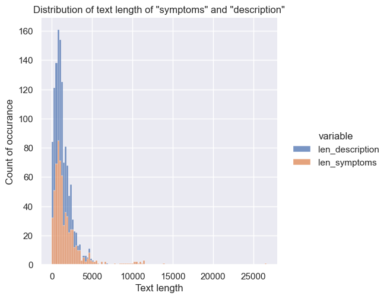
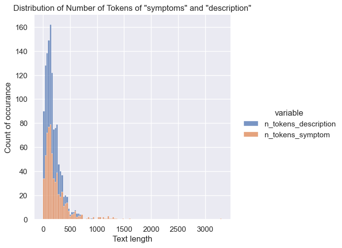

I have crawled Netdoktor for my thesis at HSLU. The task at hand was to use Netdoktor as an additional source to the main data source to the one provided by IML. Unfortunatelly, I cannot share this confidential information, because the IML data consists of Multiple Choice Questions for medical students - and yes, I am talking about exam questions :P
However, I am therefore forced to create a Word2Vec model using public available data. Therefore, a data set is obtained by web crawling of Netdoktor1. Netdoktor is a free internet platform for medical information: It provides information about diseases and symptoms in German and other languages. The website is a part of the German media company Hubert Burda Media2 and was founded by Dr. Carl Brandt and Rune Bech.
Let’s start to code :)
Code
First, the necessary libraries are imported. We use Pandas, Matplotlib and Seaborn and use only the columns disease, description and symptoms.
Import Libraries and Data
Show the code
import pandas as pdfrom matplotlib import pyplot as pltimport seaborn as snssns.set_style("whitegrid")sns.set(rc={'figure.figsize':(16, 8)})plt.rcParams['figure.figsize'] = (16, 8)from IPython.display import display, Markdowndf = ( pd.read_pickle('../data/corpus.pkl', compression = {'method': 'gzip'}, )# Select only columns 'disease', 'description', 'symptoms' [['disease','description','symptoms']])df.head()
disease
description
symptoms
0
arthrose
Als Arthrose bezeichnen Mediziner den Verschle...
Symptome Anfangs verursacht Gelenk-Verschleiss...
1
niedriger-blutdruck
Niedriger Blutdruck (arterielle Hypotonie) ist...
Niedriger Blutdruck: Symptome Nicht immer ruft...
2
alkoholvergiftung
Bei einer Alkoholvergiftung (Alkoholintoxikati...
Alkoholvergiftung: Symptome Es gibt fliessende...
4
plazentaabloesung
Die Plazenta (Mutterkuchen) ist ein Gewebe an ...
Wie erkennt man eine vorzeitige Plazentaablösu...
5
salmonellenvergiftung
Eine Salmonellenvergiftung (Salmonellose) ist ...
Welche Symptome treten bei einer Salmonellenve...
The data consists of 639 diseases and 3 columns.
Exploration
First we perform some basic text exploration that includes: for each column we calculate the text length and we calculate of the number of tokens. We use the .str.split() methods from Pandas without any fancy library in the first step.
plt.figure()g = sns.displot( data = df_melted.query('variable != "n_tokens_description" & variable != "n_tokens_symptom"'), x ='value', hue ='variable', multiple ="stack",);plt.title('Distribution of Number of Tokens of "symptoms" and "description"')plt.xlabel('Text length')plt.ylabel('Count of occurance')plt.show(g)
<Figure size 1536x768 with 0 Axes>
(a) Distribution of text length of columns “description” and “symptoms”

(b)
Figure 1: ?(caption)
The figure above shows the distribution of the description and symptoms of the Netdoktor dataset.
Show the code
plt.figure()g = sns.displot( data = df_melted.query('variable == "n_tokens_description" | variable == "n_tokens_symptom"'), x ='value', hue ='variable', multiple ="stack",);plt.title('Distribution of Text length')plt.xlabel('Text length')plt.ylabel('Count of occurance')plt.show(g)
<Figure size 1536x768 with 0 Axes>
(a) Distribution of number of tokens of columns “description” and “symptoms”

(b)
Figure 2: ?(caption)
On the left (figure above) shows the distribution of the length of description and on the right shows the distribution of the length of symptoms.